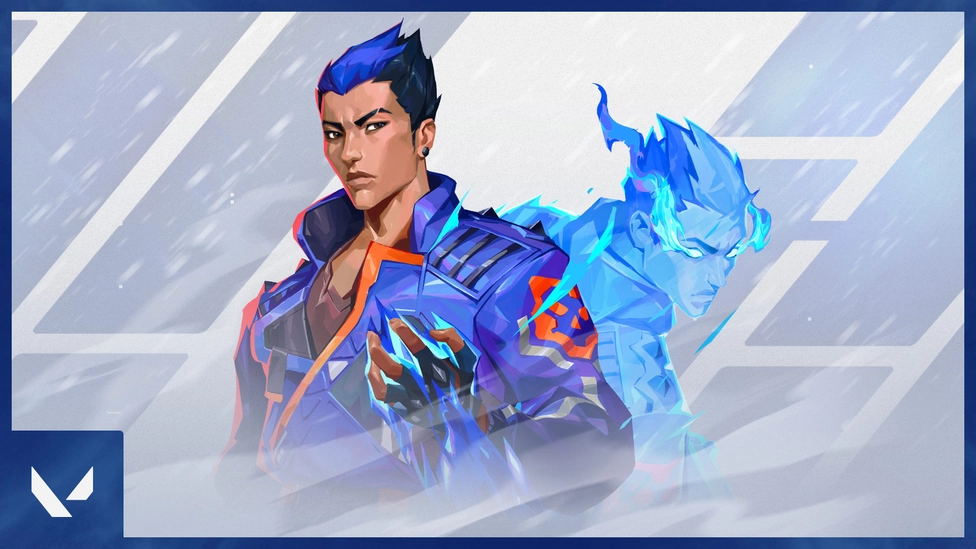
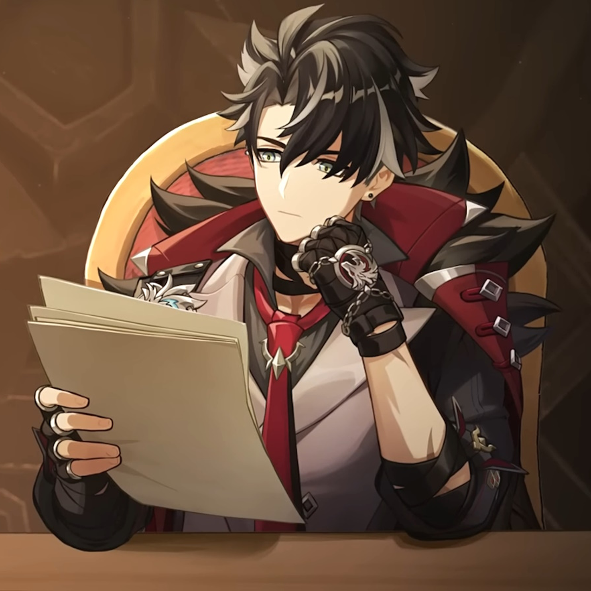

Introduction to Husbandos Materials

Japanese native, Yoru, rips holes straight through reality to infiltrate enemy lines unseen.
Using deception and aggression in equal measure,
he gets the drop on each target before they know where to look.

Wriothesley is a 5-Star Cryo character who uses a catalyst, and seems to be best used in an onfield DPS role as somebody who focuses on charged attacks